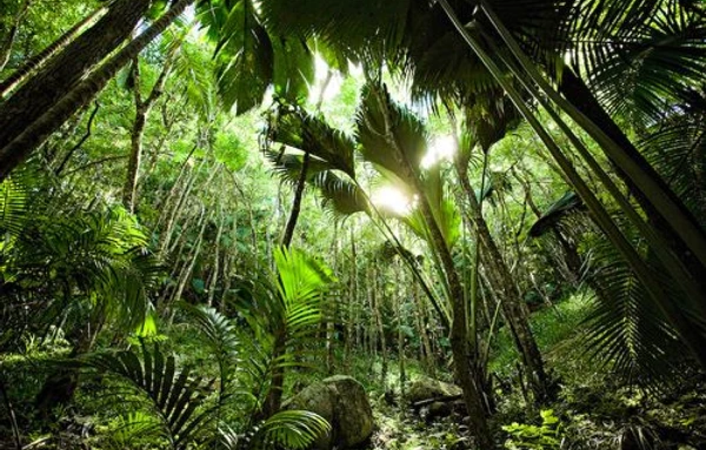

Seychelles

Paradise on earth. This is the simple description many provide when you ask about their experience in Seychelles. Seychelles is richly blessed with deep blue waters and beaches which contain numerous sea life. With its small population, it welcomes tourists from different walks of life. As you prepare for this tour, let's show you some of the best locations to visit.
Visit Moyenne Island
The Moyenne island is filled with massive rocks, giant turtles, flora, and fauna. Walk through this island to catch sight of numerous beauties. This is a quiet island that presents you with the opportunity to enjoy delicious meals and refreshing drinks. Get your camera ready, as this picturesque location will deliver all the fun you deserve.
Visit the Beau Vallon Beach
Beau Vallon is one of the most popular beaches in Seychelles. It is located in Mahe and promises to deliver all the fun you deserve. This beach is known for its calm sea and vast shoreline. It is the best spot for swimming and all forms of water sports. So, if you love snorkeling, scuba diving, fishing, or want to see others enjoy this sport, this is the perfect destination. It is the ideal destination for kids and adults.
Stop at the Copolia Trail
Before you leave the Mahe island, the Copolia trail is the next stop for you if you love trekking. It is the best location for Hikers and trekkers touring Seychelles. On this granite hilltop, you will have a clear and beautiful view of the island. Since the island is covered in sand and oceans, stand top to observe just how beautiful the ocean and sand look. Fair enough, it is one of the free tour locations in Seychelles
Tour the Vallee De Mai
One of the must-visit locations in Seychelles is the Vallee De Mai. It is a World Heritage Site By UNESCO, and it is located on Praslin Island. Have you seen the Coco De Mer Palm before? This island is one of the few places where this plant can survive in its natural form. It is also referred to as the bird watcher’s paradise as it provides a comfortable environment for different species of birds. There are hiking trails and several other locations to enjoy beautiful sights.
Explore the Morne National Park
If you are a nature lover or love trekking while on tour, this is another perfect location. This national park is a massive bio reserve that presents you with numerous fun activities and experiences. This park contains many flora and fauna; the interlinked trails also allow you to enjoy beautiful adventures and explore nature the best way. It is best to start this tour early.
Visit the Anse Lazio Beach
There are several beaches to explore when in Seychelle, Anse Lazio Beach is one of the best options. This beach is located on Praslin island, and it is very close to Madagascar and Zanzibar. This free location allows you to relax and enjoy your time with friends and family members. What makes the beach more beautiful is the huge granite boulders that border the beach. Get local food and drinks plus other exciting experiences when on this tour.